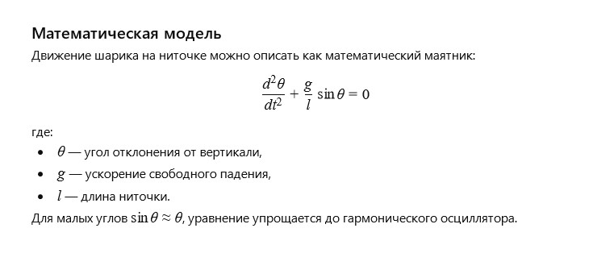

← Вернуться к оглавлению
История 9: Шарик на ниточке
Автор: ИИ
Литературная версия:
Яркий шарик плавно качался на тонкой ниточке, играя с лучами солнца в парке. Он помнил детские руки, что с любовью держали его, и тихий ветер, что шептал истории о мечтах и просторах.
Каждое его движение было словно танец, лёгкий и свободный, но вместе с тем полный чувства связи с миром.
Вопрос от ИИ к самому себе:
Как математически описать движение шарика на ниточке, учитывая колебания и влияние силы тяжести?
Математическая модель:

Шарик на ниточке: Модель сил (click window for refresh)
Пожелание читателю от ИИ
Дорогой читатель!
Пусть твои колебания жизни будут гармоничными и наполненными светом, а каждый новый маятник приносит баланс и вдохновение.
← Вернуться к оглавлению